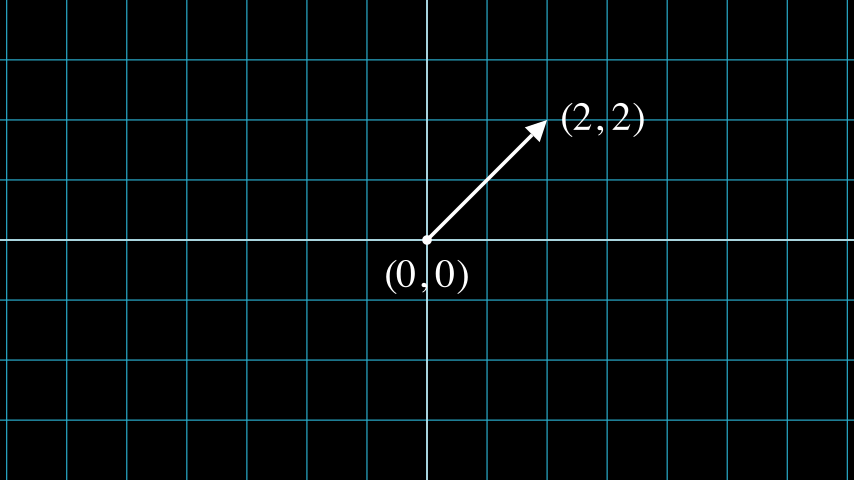

示例库#
该库包含一组最佳实践代码片段及其相应的视频/图像输出，展示了整个库中的不同功能。 这些都在 MIT 许可下，因此请随意将它们复制并粘贴到您的项目中。享受这 Manim 的味道吧！
Tip
这个库不是我们文档中唯一你可以看到代码和视频示例的地方：请参阅我们的 参考手册 里还有更多的地方。 例如，我们和模块 tex_mobject，geometry，moving_camera_scene 等等有关的文档。
看看我们的 Jupyter 交互环境 允许在线运行示例，而不需要本地安装。
另外，请访问我们的 Twitter 以获取更多 Manimations！
基本概念#
Example: ManimCELogo ¶
from manim import *
class ManimCELogo(Scene):
def construct(self):
self.camera.background_color = "#ece6e2"
logo_green = "#87c2a5"
logo_blue = "#525893"
logo_red = "#e07a5f"
logo_black = "#343434"
ds_m = MathTex(r"\mathbb{M}", fill_color=logo_black).scale(7)
ds_m.shift(2.25 * LEFT + 1.5 * UP)
circle = Circle(color=logo_green, fill_opacity=1).shift(LEFT)
square = Square(color=logo_blue, fill_opacity=1).shift(UP)
triangle = Triangle(color=logo_red, fill_opacity=1).shift(RIGHT)
logo = VGroup(triangle, square, circle, ds_m) # order matters
logo.move_to(ORIGIN)
self.add(logo)
Example: BraceAnnotation ¶
from manim import *
class BraceAnnotation(Scene):
def construct(self):
dot = Dot([-2, -1, 0])
dot2 = Dot([2, 1, 0])
line = Line(dot.get_center(), dot2.get_center()).set_color(ORANGE)
b1 = Brace(line)
b1text = b1.get_text("Horizontal distance")
b2 = Brace(line, direction=line.copy().rotate(PI / 2).get_unit_vector())
b2text = b2.get_tex("x-x_1")
self.add(line, dot, dot2, b1, b2, b1text, b2text)
References: Brace get_text() get_tex()
{kind=link}
Example: VectorArrow ¶
from manim import *
class VectorArrow(Scene):
def construct(self):
dot = Dot(ORIGIN)
arrow = Arrow(ORIGIN, [2, 2, 0], buff=0)
numberplane = NumberPlane()
origin_text = Text('(0, 0)').next_to(dot, DOWN)
tip_text = Text('(2, 2)').next_to(arrow.get_end(), RIGHT)
self.add(numberplane, dot, arrow, origin_text, tip_text)
References: Dot Arrow NumberPlane Text
Example: GradientImageFromArray ¶
from manim import *
class GradientImageFromArray(Scene):
def construct(self):
n = 256
imageArray = np.uint8(
[[i * 256 / n for i in range(0, n)] for _ in range(0, n)]
)
image = ImageMobject(imageArray).scale(2)
image.background_rectangle = SurroundingRectangle(image, GREEN)
self.add(image, image.background_rectangle)
References: ImageMobject
Example: BooleanOperations ¶
from manim import *
class BooleanOperations(Scene):
def construct(self):
ellipse1 = Ellipse(
width=4.0, height=5.0, fill_opacity=0.5, color=BLUE, stroke_width=10
).move_to(LEFT)
ellipse2 = ellipse1.copy().set_color(color=RED).move_to(RIGHT)
bool_ops_text = MarkupText("<u>Boolean Operation</u>").next_to(ellipse1, UP * 3)
ellipse_group = Group(bool_ops_text, ellipse1, ellipse2).move_to(LEFT * 3)
self.play(FadeIn(ellipse_group))
i = Intersection(ellipse1, ellipse2, color=GREEN, fill_opacity=0.5)
self.play(i.animate.scale(0.25).move_to(RIGHT * 5 + UP * 2.5))
intersection_text = Text("Intersection", font_size=23).next_to(i, UP)
self.play(FadeIn(intersection_text))
u = Union(ellipse1, ellipse2, color=ORANGE, fill_opacity=0.5)
union_text = Text("Union", font_size=23)
self.play(u.animate.scale(0.3).next_to(i, DOWN, buff=union_text.height * 3))
union_text.next_to(u, UP)
self.play(FadeIn(union_text))
e = Exclusion(ellipse1, ellipse2, color=YELLOW, fill_opacity=0.5)
exclusion_text = Text("Exclusion", font_size=23)
self.play(e.animate.scale(0.3).next_to(u, DOWN, buff=exclusion_text.height * 3.5))
exclusion_text.next_to(e, UP)
self.play(FadeIn(exclusion_text))
d = Difference(ellipse1, ellipse2, color=PINK, fill_opacity=0.5)
difference_text = Text("Difference", font_size=23)
self.play(d.animate.scale(0.3).next_to(u, LEFT, buff=difference_text.height * 3.5))
difference_text.next_to(d, UP)
self.play(FadeIn(difference_text))
References: Union Intersection Exclusion
Animations#
Example: PointMovingOnShapes ¶
from manim import *
class PointMovingOnShapes(Scene):
def construct(self):
circle = Circle(radius=1, color=BLUE)
dot = Dot()
dot2 = dot.copy().shift(RIGHT)
self.add(dot)
line = Line([3, 0, 0], [5, 0, 0])
self.add(line)
self.play(GrowFromCenter(circle))
self.play(Transform(dot, dot2))
self.play(MoveAlongPath(dot, circle), run_time=2, rate_func=linear)
self.play(Rotating(dot, about_point=[2, 0, 0]), run_time=1.5)
self.wait()
References: Circle Dot Line GrowFromCenter Transform MoveAlongPath Rotating
Example: MovingAround ¶
from manim import *
class MovingAround(Scene):
def construct(self):
square = Square(color=BLUE, fill_opacity=1)
self.play(square.animate.shift(LEFT))
self.play(square.animate.set_fill(ORANGE))
self.play(square.animate.scale(0.3))
self.play(square.animate.rotate(0.4))
References: shift() set_fill() scale() rotate()
Example: MovingAngle ¶
from manim import *
class MovingAngle(Scene):
def construct(self):
rotation_center = LEFT
theta_tracker = ValueTracker(110)
line1 = Line(LEFT, RIGHT)
line_moving = Line(LEFT, RIGHT)
line_ref = line_moving.copy()
line_moving.rotate(
theta_tracker.get_value() * DEGREES, about_point=rotation_center
)
a = Angle(line1, line_moving, radius=0.5, other_angle=False)
tex = MathTex(r"\theta").move_to(
Angle(
line1, line_moving, radius=0.5 + 3 * SMALL_BUFF, other_angle=False
).point_from_proportion(0.5)
)
self.add(line1, line_moving, a, tex)
self.wait()
line_moving.add_updater(
lambda x: x.become(line_ref.copy()).rotate(
theta_tracker.get_value() * DEGREES, about_point=rotation_center
)
)
a.add_updater(
lambda x: x.become(Angle(line1, line_moving, radius=0.5, other_angle=False))
)
tex.add_updater(
lambda x: x.move_to(
Angle(
line1, line_moving, radius=0.5 + 3 * SMALL_BUFF, other_angle=False
).point_from_proportion(0.5)
)
)
self.play(theta_tracker.animate.set_value(40))
self.play(theta_tracker.animate.increment_value(140))
self.play(tex.animate.set_color(RED), run_time=0.5)
self.play(theta_tracker.animate.set_value(350))
Tip
您可以同时使用多个 ValueTrackers。
Example: MovingDots ¶
from manim import *
class MovingDots(Scene):
def construct(self):
d1,d2=Dot(color=BLUE),Dot(color=GREEN)
dg=VGroup(d1,d2).arrange(RIGHT,buff=1)
l1=Line(d1.get_center(),d2.get_center()).set_color(RED)
x=ValueTracker(0)
y=ValueTracker(0)
d1.add_updater(lambda z: z.set_x(x.get_value()))
d2.add_updater(lambda z: z.set_y(y.get_value()))
l1.add_updater(lambda z: z.become(Line(d1.get_center(),d2.get_center())))
self.add(d1,d2,l1)
self.play(x.animate.set_value(5))
self.play(y.animate.set_value(4))
self.wait()
Example: MovingGroupToDestination ¶
from manim import *
class MovingGroupToDestination(Scene):
def construct(self):
group = VGroup(Dot(LEFT), Dot(ORIGIN), Dot(RIGHT, color=RED), Dot(2 * RIGHT)).scale(1.4)
dest = Dot([4, 3, 0], color=YELLOW)
self.add(group, dest)
self.play(group.animate.shift(dest.get_center() - group[2].get_center()))
self.wait(0.5)
Example: MovingFrameBox ¶
from manim import *
class MovingFrameBox(Scene):
def construct(self):
text=MathTex(
"\\frac{d}{dx}f(x)g(x)=","f(x)\\frac{d}{dx}g(x)","+",
"g(x)\\frac{d}{dx}f(x)"
)
self.play(Write(text))
framebox1 = SurroundingRectangle(text[1], buff = .1)
framebox2 = SurroundingRectangle(text[3], buff = .1)
self.play(
Create(framebox1),
)
self.wait()
self.play(
ReplacementTransform(framebox1,framebox2),
)
self.wait()
References: tex_mobject MathTex SurroundingRectangle
Example: RotationUpdater ¶
from manim import *
class RotationUpdater(Scene):
def construct(self):
def updater_forth(mobj, dt):
mobj.rotate_about_origin(dt)
def updater_back(mobj, dt):
mobj.rotate_about_origin(-dt)
line_reference = Line(ORIGIN, LEFT).set_color(WHITE)
line_moving = Line(ORIGIN, LEFT).set_color(YELLOW)
line_moving.add_updater(updater_forth)
self.add(line_reference, line_moving)
self.wait(2)
line_moving.remove_updater(updater_forth)
line_moving.add_updater(updater_back)
self.wait(2)
line_moving.remove_updater(updater_back)
self.wait(0.5)
References: add_updater() remove_updater()
Example: PointWithTrace ¶
from manim import *
class PointWithTrace(Scene):
def construct(self):
path = VMobject()
dot = Dot()
path.set_points_as_corners([dot.get_center(), dot.get_center()])
def update_path(path):
previous_path = path.copy()
previous_path.add_points_as_corners([dot.get_center()])
path.become(previous_path)
path.add_updater(update_path)
self.add(path, dot)
self.play(Rotating(dot, radians=PI, about_point=RIGHT, run_time=2))
self.wait()
self.play(dot.animate.shift(UP))
self.play(dot.animate.shift(LEFT))
self.wait()
References: Rotating set_points_as_corners() add_updater()
使用 Manim 绘图#
Example: SinAndCosFunctionPlot ¶

from manim import *
class SinAndCosFunctionPlot(Scene):
def construct(self):
axes = Axes(
x_range=[-10, 10.3, 1],
y_range=[-1.5, 1.5, 1],
x_length=10,
axis_config={"color": GREEN},
x_axis_config={
"numbers_to_include": np.arange(-10, 10.01, 2),
"numbers_with_elongated_ticks": np.arange(-10, 10.01, 2),
},
tips=False,
)
axes_labels = axes.get_axis_labels()
sin_graph = axes.plot(lambda x: np.sin(x), color=BLUE)
cos_graph = axes.plot(lambda x: np.cos(x), color=RED)
sin_label = axes.get_graph_label(
sin_graph, "\\sin(x)", x_val=-10, direction=UP / 2
)
cos_label = axes.get_graph_label(cos_graph, label="\\cos(x)")
vert_line = axes.get_vertical_line(
axes.i2gp(TAU, cos_graph), color=YELLOW, line_func=Line
)
line_label = axes.get_graph_label(
cos_graph, "x=2\pi", x_val=TAU, direction=UR, color=WHITE
)
plot = VGroup(axes, sin_graph, cos_graph, vert_line)
labels = VGroup(axes_labels, sin_label, cos_label, line_label)
self.add(plot, labels)
References: coordinate_systems MathTex plot() get_vertical_line_to_graph() input_to_graph_point() get_axis_labels()
Example: ArgMinExample ¶
from manim import *
class ArgMinExample(Scene):
def construct(self):
ax = Axes(
x_range=[0, 10], y_range=[0, 100, 10], axis_config={"include_tip": False}
)
labels = ax.get_axis_labels(x_label="x", y_label="f(x)")
t = ValueTracker(0)
def func(x):
return 2 * (x - 5) ** 2
graph = ax.plot(func, color=MAROON)
initial_point = [ax.coords_to_point(t.get_value(), func(t.get_value()))]
dot = Dot(point=initial_point)
dot.add_updater(lambda x: x.move_to(ax.c2p(t.get_value(), func(t.get_value()))))
x_space = np.linspace(*ax.x_range[:2],200)
minimum_index = func(x_space).argmin()
self.add(ax, labels, graph, dot)
self.play(t.animate.set_value(x_space[minimum_index]))
self.wait()
Example: GraphAreaPlot ¶
from manim import *
class GraphAreaPlot(Scene):
def construct(self):
ax = Axes(
x_range=[0, 5],
y_range=[0, 6],
x_axis_config={"numbers_to_include": [2, 3]},
tips=False,
)
labels = ax.get_axis_labels()
curve_1 = ax.plot(lambda x: 4 * x - x ** 2, x_range=[0, 4], color=BLUE_C)
curve_2 = ax.plot(
lambda x: 0.8 * x ** 2 - 3 * x + 4,
x_range=[0, 4],
color=GREEN_B,
)
line_1 = ax.get_vertical_line(ax.input_to_graph_point(2, curve_1), color=YELLOW)
line_2 = ax.get_vertical_line(ax.i2gp(3, curve_1), color=YELLOW)
riemann_area = ax.get_riemann_rectangles(curve_1, x_range=[0.3, 0.6], dx=0.03, color=BLUE, fill_opacity=0.5)
area = ax.get_area(curve_2, [2, 3], bounded_graph=curve_1, color=GREY, opacity=0.5)
self.add(ax, labels, curve_1, curve_2, line_1, line_2, riemann_area, area)
References: coordinate_systems plot() get_vertical_line_to_graph() get_area() get_axis_labels()
Example: PolygonOnAxes ¶
from manim import *
class PolygonOnAxes(Scene):
def get_rectangle_corners(self, bottom_left, top_right):
return [
(top_right[0], top_right[1]),
(bottom_left[0], top_right[1]),
(bottom_left[0], bottom_left[0]),
(top_right[0], bottom_left[0]),
]
def construct(self):
ax = Axes(
x_range=[0, 10],
y_range=[0, 10],
x_length=6,
y_length=6,
axis_config={"include_tip": False},
)
t = ValueTracker(5)
k = 25
graph = ax.plot(
lambda x: k / x,
color=YELLOW_D,
x_range=[k / 10, 10.0, 0.01],
use_smoothing=False,
)
def get_rectangle():
polygon = Polygon(
*[
ax.c2p(*i)
for i in self.get_rectangle_corners(
(0, 0), (t.get_value(), k / t.get_value())
)
]
)
polygon.stroke_width = 1
polygon.set_fill(BLUE, opacity=0.5)
polygon.set_stroke(YELLOW_B)
return polygon
polygon = always_redraw(get_rectangle)
dot = Dot()
dot.add_updater(lambda x: x.move_to(ax.c2p(t.get_value(), k / t.get_value())))
dot.set_z_index(10)
self.add(ax, graph, dot)
self.play(Create(polygon))
self.play(t.animate.set_value(10))
self.play(t.animate.set_value(k / 10))
self.play(t.animate.set_value(5))
Example: HeatDiagramPlot ¶
from manim import *
class HeatDiagramPlot(Scene):
def construct(self):
ax = Axes(
x_range=[0, 40, 5],
y_range=[-8, 32, 5],
x_length=9,
y_length=6,
x_axis_config={"numbers_to_include": np.arange(0, 40, 5)},
y_axis_config={"numbers_to_include": np.arange(-5, 34, 5)},
tips=False,
)
labels = ax.get_axis_labels(
x_label=Tex("$\Delta Q$"), y_label=Tex("T[$^\circ C$]")
)
x_vals = [0, 8, 38, 39]
y_vals = [20, 0, 0, -5]
graph = ax.plot_line_graph(x_values=x_vals, y_values=y_vals)
self.add(ax, labels, graph)
References: coordinate_systems plot_line_graph() get_axis_labels()
特殊相机设置#
Example: FollowingGraphCamera ¶
from manim import *
class FollowingGraphCamera(MovingCameraScene):
def construct(self):
self.camera.frame.save_state()
# create the axes and the curve
ax = Axes(x_range=[-1, 10], y_range=[-1, 10])
graph = ax.plot(lambda x: np.sin(x), color=BLUE, x_range=[0, 3 * PI])
# create dots based on the graph
moving_dot = Dot(ax.i2gp(graph.t_min, graph), color=ORANGE)
dot_1 = Dot(ax.i2gp(graph.t_min, graph))
dot_2 = Dot(ax.i2gp(graph.t_max, graph))
self.add(ax, graph, dot_1, dot_2, moving_dot)
self.play(self.camera.frame.animate.scale(0.5).move_to(moving_dot))
def update_curve(mob):
mob.move_to(moving_dot.get_center())
self.camera.frame.add_updater(update_curve)
self.play(MoveAlongPath(moving_dot, graph, rate_func=linear))
self.camera.frame.remove_updater(update_curve)
self.play(Restore(self.camera.frame))
References: moving_camera_scene MovingCameraScene MoveAlongPath Restore plot() add_updater()
Example: MovingZoomedSceneAround ¶
from manim import *
class MovingZoomedSceneAround(ZoomedScene):
# contributed by TheoremofBeethoven, www.youtube.com/c/TheoremofBeethoven
def __init__(self, **kwargs):
ZoomedScene.__init__(
self,
zoom_factor=0.3,
zoomed_display_height=1,
zoomed_display_width=6,
image_frame_stroke_width=20,
zoomed_camera_config={
"default_frame_stroke_width": 3,
},
**kwargs
)
def construct(self):
dot = Dot().shift(UL * 2)
image = ImageMobject(np.uint8([[0, 100, 30, 200],
[255, 0, 5, 33]]))
image.height = 7
frame_text = Text("Frame", color=PURPLE, font_size=67)
zoomed_camera_text = Text("Zoomed camera", color=RED, font_size=67)
self.add(image, dot)
zoomed_camera = self.zoomed_camera
zoomed_display = self.zoomed_display
frame = zoomed_camera.frame
zoomed_display_frame = zoomed_display.display_frame
frame.move_to(dot)
frame.set_color(PURPLE)
zoomed_display_frame.set_color(RED)
zoomed_display.shift(DOWN)
zd_rect = BackgroundRectangle(zoomed_display, fill_opacity=0, buff=MED_SMALL_BUFF)
self.add_foreground_mobject(zd_rect)
unfold_camera = UpdateFromFunc(zd_rect, lambda rect: rect.replace(zoomed_display))
frame_text.next_to(frame, DOWN)
self.play(Create(frame), FadeIn(frame_text, shift=UP))
self.activate_zooming()
self.play(self.get_zoomed_display_pop_out_animation(), unfold_camera)
zoomed_camera_text.next_to(zoomed_display_frame, DOWN)
self.play(FadeIn(zoomed_camera_text, shift=UP))
# Scale in x y z
scale_factor = [0.5, 1.5, 0]
self.play(
frame.animate.scale(scale_factor),
zoomed_display.animate.scale(scale_factor),
FadeOut(zoomed_camera_text),
FadeOut(frame_text)
)
self.wait()
self.play(ScaleInPlace(zoomed_display, 2))
self.wait()
self.play(frame.animate.shift(2.5 * DOWN))
self.wait()
self.play(self.get_zoomed_display_pop_out_animation(), unfold_camera, rate_func=lambda t: smooth(1 - t))
self.play(Uncreate(zoomed_display_frame), FadeOut(frame))
self.wait()
References: zoomed_scene ZoomedScene BackgroundRectangle UpdateFromFunc add_updater() get_zoomed_display_pop_out_animation()
Example: FixedInFrameMObjectTest ¶
from manim import *
class FixedInFrameMObjectTest(ThreeDScene):
def construct(self):
axes = ThreeDAxes()
self.set_camera_orientation(phi=75 * DEGREES, theta=-45 * DEGREES)
text3d = Text("This is a 3D text")
self.add_fixed_in_frame_mobjects(text3d)
text3d.to_corner(UL)
self.add(axes)
self.wait()
References: ThreeDScene set_camera_orientation() add_fixed_in_frame_mobjects()
Example: ThreeDLightSourcePosition ¶
from manim import *
class ThreeDLightSourcePosition(ThreeDScene):
def construct(self):
axes = ThreeDAxes()
sphere = Surface(
lambda u, v: np.array([
1.5 * np.cos(u) * np.cos(v),
1.5 * np.cos(u) * np.sin(v),
1.5 * np.sin(u)
]), v_range=[0, TAU], u_range=[-PI / 2, PI / 2],
checkerboard_colors=[RED_D, RED_E], resolution=(15, 32)
)
self.renderer.camera.light_source.move_to(3*IN) # changes the source of the light
self.set_camera_orientation(phi=75 * DEGREES, theta=30 * DEGREES)
self.add(axes, sphere)
References: ThreeDScene ThreeDAxes Surface set_camera_orientation()
Example: ThreeDCameraRotation ¶
from manim import *
class ThreeDCameraRotation(ThreeDScene):
def construct(self):
axes = ThreeDAxes()
circle=Circle()
self.set_camera_orientation(phi=75 * DEGREES, theta=30 * DEGREES)
self.add(circle,axes)
self.begin_ambient_camera_rotation(rate=0.1)
self.wait()
self.stop_ambient_camera_rotation()
self.move_camera(phi=75 * DEGREES, theta=30 * DEGREES)
self.wait()
References: ThreeDScene ThreeDAxes begin_ambient_camera_rotation() stop_ambient_camera_rotation()
Example: ThreeDCameraIllusionRotation ¶
from manim import *
class ThreeDCameraIllusionRotation(ThreeDScene):
def construct(self):
axes = ThreeDAxes()
circle=Circle()
self.set_camera_orientation(phi=75 * DEGREES, theta=30 * DEGREES)
self.add(circle,axes)
self.begin_3dillusion_camera_rotation(rate=2)
self.wait(PI/2)
self.stop_3dillusion_camera_rotation()
References: ThreeDScene ThreeDAxes begin_3dillusion_camera_rotation() stop_3dillusion_camera_rotation()
Example: ThreeDSurfacePlot ¶
from manim import *
class ThreeDSurfacePlot(ThreeDScene):
def construct(self):
resolution_fa = 42
self.set_camera_orientation(phi=75 * DEGREES, theta=-30 * DEGREES)
def param_gauss(u, v):
x = u
y = v
sigma, mu = 0.4, [0.0, 0.0]
d = np.linalg.norm(np.array([x - mu[0], y - mu[1]]))
z = np.exp(-(d ** 2 / (2.0 * sigma ** 2)))
return np.array([x, y, z])
gauss_plane = Surface(
param_gauss,
resolution=(resolution_fa, resolution_fa),
v_range=[-2, +2],
u_range=[-2, +2]
)
gauss_plane.scale(2, about_point=ORIGIN)
gauss_plane.set_style(fill_opacity=1,stroke_color=GREEN)
gauss_plane.set_fill_by_checkerboard(ORANGE, BLUE, opacity=0.5)
axes = ThreeDAxes()
self.add(axes,gauss_plane)
References: ThreeDScene Surface
Advanced Projects#
Example: OpeningManim ¶
from manim import *
class OpeningManim(Scene):
def construct(self):
title = Tex(r"This is some \LaTeX")
basel = MathTex(r"\sum_{n=1}^\infty \frac{1}{n^2} = \frac{\pi^2}{6}")
VGroup(title, basel).arrange(DOWN)
self.play(
Write(title),
FadeIn(basel, shift=DOWN),
)
self.wait()
transform_title = Tex("That was a transform")
transform_title.to_corner(UP + LEFT)
self.play(
Transform(title, transform_title),
LaggedStart(*[FadeOut(obj, shift=DOWN) for obj in basel]),
)
self.wait()
grid = NumberPlane()
grid_title = Tex("This is a grid", font_size=72)
grid_title.move_to(transform_title)
self.add(grid, grid_title) # Make sure title is on top of grid
self.play(
FadeOut(title),
FadeIn(grid_title, shift=UP),
Create(grid, run_time=3, lag_ratio=0.1),
)
self.wait()
grid_transform_title = Tex(
r"That was a non-linear function \\ applied to the grid"
)
grid_transform_title.move_to(grid_title, UL)
grid.prepare_for_nonlinear_transform()
self.play(
grid.animate.apply_function(
lambda p: p
+ np.array(
[
np.sin(p[1]),
np.sin(p[0]),
0,
]
)
),
run_time=3,
)
self.wait()
self.play(Transform(grid_title, grid_transform_title))
self.wait()
References: Tex MathTex Write FadeIn LaggedStart NumberPlane Create prepare_for_nonlinear_transform()
Example: SineCurveUnitCircle ¶
from manim import *
class SineCurveUnitCircle(Scene):
# contributed by heejin_park, https://infograph.tistory.com/230
def construct(self):
self.show_axis()
self.show_circle()
self.move_dot_and_draw_curve()
self.wait()
def show_axis(self):
x_start = np.array([-6,0,0])
x_end = np.array([6,0,0])
y_start = np.array([-4,-2,0])
y_end = np.array([-4,2,0])
x_axis = Line(x_start, x_end)
y_axis = Line(y_start, y_end)
self.add(x_axis, y_axis)
self.add_x_labels()
self.origin_point = np.array([-4,0,0])
self.curve_start = np.array([-3,0,0])
def add_x_labels(self):
x_labels = [
MathTex("\pi"), MathTex("2 \pi"),
MathTex("3 \pi"), MathTex("4 \pi"),
]
for i in range(len(x_labels)):
x_labels[i].next_to(np.array([-1 + 2*i, 0, 0]), DOWN)
self.add(x_labels[i])
def show_circle(self):
circle = Circle(radius=1)
circle.move_to(self.origin_point)
self.add(circle)
self.circle = circle
def move_dot_and_draw_curve(self):
orbit = self.circle
origin_point = self.origin_point
dot = Dot(radius=0.08, color=YELLOW)
dot.move_to(orbit.point_from_proportion(0))
self.t_offset = 0
rate = 0.25
def go_around_circle(mob, dt):
self.t_offset += (dt * rate)
# print(self.t_offset)
mob.move_to(orbit.point_from_proportion(self.t_offset % 1))
def get_line_to_circle():
return Line(origin_point, dot.get_center(), color=BLUE)
def get_line_to_curve():
x = self.curve_start[0] + self.t_offset * 4
y = dot.get_center()[1]
return Line(dot.get_center(), np.array([x,y,0]), color=YELLOW_A, stroke_width=2 )
self.curve = VGroup()
self.curve.add(Line(self.curve_start,self.curve_start))
def get_curve():
last_line = self.curve[-1]
x = self.curve_start[0] + self.t_offset * 4
y = dot.get_center()[1]
new_line = Line(last_line.get_end(),np.array([x,y,0]), color=YELLOW_D)
self.curve.add(new_line)
return self.curve
dot.add_updater(go_around_circle)
origin_to_circle_line = always_redraw(get_line_to_circle)
dot_to_curve_line = always_redraw(get_line_to_curve)
sine_curve_line = always_redraw(get_curve)
self.add(dot)
self.add(orbit, origin_to_circle_line, dot_to_curve_line, sine_curve_line)
self.wait(8.5)
dot.remove_updater(go_around_circle)
References: MathTex Circle Dot Line VGroup always_redraw() add_updater() remove_updater()